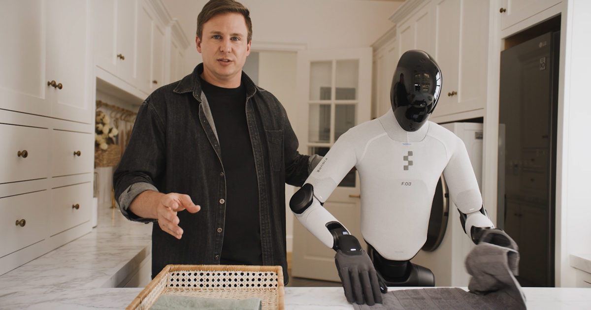

人形脉冲
本周两条主线并行：政策侧以标准征求意见与地方场景征集压实「可部署」门槛，产业侧则用 Digit 5 的协同安全架构与 Helix 2.5 的跨户零样本家务，分别回答工厂与人居能否规模化。编辑判断：供应链审计与央企进厂时间表同样关键——产能叙事须与工时、返修和订单结构同屏核验。

国内政策
深圳市就「人工智能先锋城市」若干措施（2026 修订版）公开征求意见
9月16日，市工信局发布通告，对《深圳市打造人工智能先锋城市的若干措施》（深工信规〔2024〕13号）修订形成征求意见稿，落实《深圳市推动人工智能与应用发展行动计划（2026—2028年）》，意见反馈截止2026年10月15日。通告随附修订稿与说明全文。编辑判断：深圳集聚整机、零部件与场景试验场，规范性文件修订往往先于补贴、算力与采购口径调整；具身企业应跟踪附件是否强化智能终端、机器人与「AI+制造」条款，而非仅看标题中的「人工智能」。
深圳市工业和信息化局
工信部《国家人形机器人产业标准体系建设指南（2026版）》征求意见进入最后窗口
8月24日发布的征求意见稿公示期至2026年9月23日，本期窗口内仍可向 kjbz@miit.gov.cn 提交反馈。指南提出到2028年建成协调配套标准体系，在能力测试评估、关键技术、平台系统、场景应用、安全治理等方面完成至少100项关键标准制定。编辑观点：与第三批行业标准中灵巧手接口规范等条目形成上下位衔接；截止日前提交意见的企业，更易在后续 WG 分工中争取测试方法与安全伦理话语权。
工信部
广东征集 2026 年「机器人+」典型应用场景（具身智能）
省工信厅面向全省已实景落地的具身智能机器人案例开展征集，覆盖制造、医疗、物流、养老、教育、商业社区、政务文旅、居家康养八大领域。申报主体须于9月24日前在「广东省数字工信平台」上传材料，地市审核推荐截止10月10日。编辑判断：截止日落在本期窗口末尾，实质是把「能演示」倒逼成「能交付、能复盘」的清单；后续应跟踪入选案例是否进入部委推广与采购口径。
广东省工业和信息化厅
海珠区：具身智能专项措施与省训练场运营纳入政务公开
9月18日，区政府门户发布区科工信局稿件：XAIR Expo 2026 具身智能博览会期间，本土企业发布世界模型与系统级「大脑」新品；文中明确已出台推动前沿产业创新发展若干措施，具身智能产业专项采用「研发激励+平台扶持+量产支持+场景培育」组合，并披露省级训练场一期投运、人工智能产业协会入驻广报中心等信息。编辑观点：这是可核验的地方政策包转述，价值在财政与场景工具是否兑现为可计量工时，而非博览会形容词。
广州市海珠区人民政府
国外前沿
Agility Robotics 发布 Digit 5：面向与人协同的安全规模化作业
9月15日，Agility 在俄勒冈州 Salem 发布 Digit 5，宣称可在无物理安全围栏条件下与人近距离协作，依托人形检测、运动意图通信与独立安全控制器；整机高约 5 英尺 11 英寸、可重复搬运约 50 磅负载，并给出约 10:1 运行—充电比与 2027 年 H1 早期交付、年底 GA 时间表。通稿称 Digit 4 累计商用部署逾 6.5 万小时，Digit 5 订单管道逾 3 亿美元（受合同里程碑约束）。编辑判断：产业意义在于把「安全架构」当作扩产前提，并与 NVIDIA Halos 等工业安全栈对接；仍需第三方工时与 OSHA 场景下的可用率数据。
Agility Robotics

arXiv：Weave 从人类—物体交互学习全身灵巧 loco-manipulation
9月15日提交（arXiv:2609.16683）。Weave 将捕获的人类—物体交互经接触感知重定向与接近运动补全，转为可执行机器人轨迹，再用单一策略联合控制 29 个身体关节与 12 个手指关节；在九个物体上训练交互成功率 92.5%，对未见序列零样本成功率 65.0%，并发布约 9000 条、约 23 小时真机 rollout 数据。编辑观点：数据释放比单点成功率更值得跟踪——若接触标注可复用，将降低「换物体即重训」成本；仍待独立真机长程验证。
arXiv
arXiv：ViLoMan 以深度与本体感知实现门关闭等全身 loco-manipulation
9月16日提交（arXiv:2609.19340）。ViLoMan 先把部分 kinematic 人类演示转为完整、物理可执行的机器人轨迹，再以教师—学生蒸馏学习统一策略，将 egocentric 深度与本体测量直接映射为关节级全身动作，部署时无需参考动作或中间指令。作者在多种门配置与初始条件下于仿真与真机评估关门任务，称 Unitree G1 可仅凭 onboard 深度与本体完成全流程。编辑判断：任务边界清晰，适合检验 sim-to-real 与多样门型泛化；工业价值取决于维护与传感标定成本，而非单次演示。
arXiv
arXiv：KINO 以关键帧衔接 VLM 规划与全身 RL 控制
9月16日提交（arXiv:2609.18869）。框架以运动关键帧连接 VLM 与 RL：VLM 据语言指令与场景观测从库中选择关键帧，再经场景重定向后由关键帧条件全身策略输出关节动作。作者称在仿真中采用显著性采样训练低层策略，可将端到端任务成功率从 44% 提升至 92%，并在 Unitree G1 上完成单手/双手搬运与放置，且可泛化至训练参考之外的放置位置。编辑观点：分层接口降低 VLM 直接输出连续控制的难度；瓶颈仍在关键帧库覆盖与真实 clutter 下的长程成功率。
arXiv
重点新闻

本期主条
Figure 发布 Helix 2.5：30 户陌生家庭零样本家务试验
9月17日，Figure 宣布 Helix 2.5 在 Index 人类行为预训练基础上，经任务微调得到铺床、叠毛巾、整理客厅三项行为，并在 30 套此前未采集数据的湾区家庭盲测：420 次完整任务试验成功 237 次（约 56%），无 Index 预训练的同架构策略仅 9%。公司强调「零样本」指评估家庭与操作对象，而非未经任何任务数据。编辑判断：这是迄今可核验范围最大的跨户全身家务样本，但 44% 失败率与自评实验设计意味着离付费家政仍远；应等待独立复现与干预统计。
Figure AI
东风：人形机器人 10 月进厂，年底小批量试制
9月20日，第一财经报道东风汽车第十届科技创新周发布「天净零碳」等多项计划；智能化技术首席总工程师张振林称，人形机器人将于10月进入工厂，面向生产制造执行分拣、质检等任务，年底开展小批量、小点位试制，目标明年年底作业能力与真人持平。机器狗将更快进入 4S 导购等场景。编辑观点：与 №02 窗口内的部署预告相比，本期给出更明确的试制节点；关键在总装节拍内的可用率与返修，而非科技周展示动作。
第一财经
特斯拉据报在华东审计 Optimus 供应链
9月18日，《南华早报》援引知情人士称，特斯拉团队已在华启动新一轮供应商审计，涉及三花智控、均胜电子、拓普等浙江零部件企业，多数已为特斯拉汽车供货。报道指审计旨在为 Optimus 今年晚些时候上市后快速扩产做准备；记者联系相关企业与特斯拉，截至发稿未获官方确认具体行程。编辑判断：与 21 世纪经济报道等 9 月 17 日跟进相互印证「产线—供应链」同步推进，但千台级订单与 5 万台产量传闻仍非特斯拉股东信口径；应区分内部 Optimus Academy 训练用量与对外销售。
South China Morning Post
第九届中国机器人峰会在杭州开幕
9月17日，以「智联新生态，赋能全场景——机器人+时代的智变与质变」为主题的第九届中国机器人峰会在杭州未来科技城开幕。主论坛发布机器人具身智能能力评测框架、《2026中国具身智能产业出海研究报告》，并启动高校智能机器人创意大赛智能体专项赛等。编辑观点：评测框架若转化为采购与保险口径，将加速「表演—作业」分水岭；但框架本身不等于第三方工时数据，仍需与实景实训专项行动的验证指标对照。
中国新闻网
上海人形机器人 URKL 自由格斗联赛在宝山开赛
9月20日《解放日报》报道，众擎全球人形机器人自由格斗联赛（URKL）上海站在宝山体育中心举行，5000 张门票售罄；32 支队伍统一使用众擎 T800 全尺寸人形作为竞技平台。报道指宝山区与众擎、顾村镇合资成立申擎机器人，具身智能赋能中心预计 10 月投运。编辑判断：赛事热度反映公众认知，但格斗动态稳定性与工厂分拣可靠性并非同一指标；更应跟踪赋能中心数据仓与产业园公共验证平台是否降低中小企业真机试错成本。
上海市人民政府
Faraday Future「919」发布九款 EAI 设备并开售 Futurist 人形
9月19日，Faraday Future 在线举办 919 发布会，推出涵盖人形、四足与移动操作臂等九款 EAI 设备配置，并发布 K-12 教育、科研、安防与巡检四套行业解决方案。旗舰 All-New Futurist 人形宣称 51 主动自由度（灵巧手升级后 71），标准版定价 89900 美元起，Ultra 版搭载 NVIDIA Jetson Thor；Master Mini 桌面人形 9990 美元起。编辑观点：「一脑多形」产品矩阵完整度是看点，但公司长期交付记录与 8 月 158 台订单量提示需把开售声明与 IROS 2026 展台订单、后续财报出货分开记账。
Faraday Future